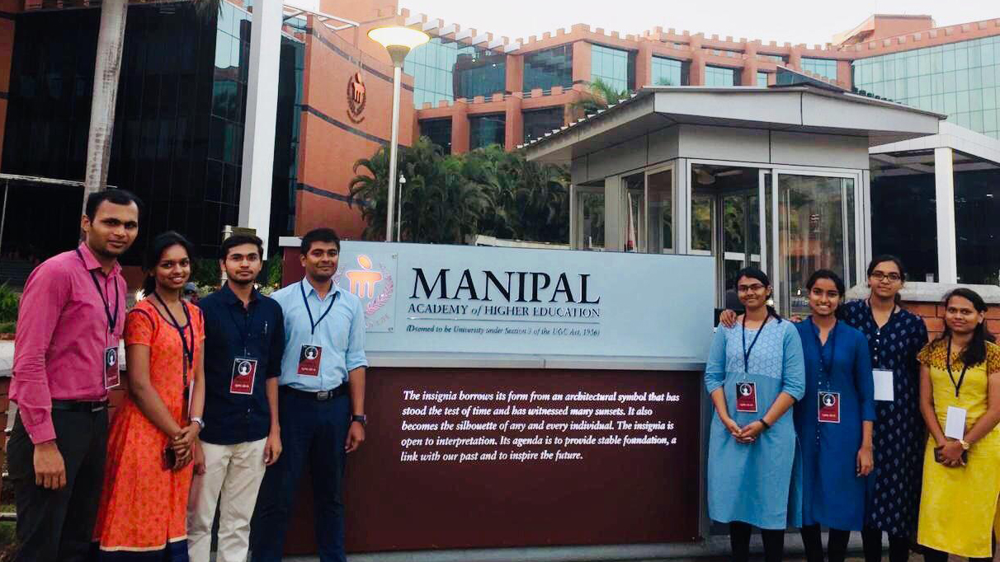
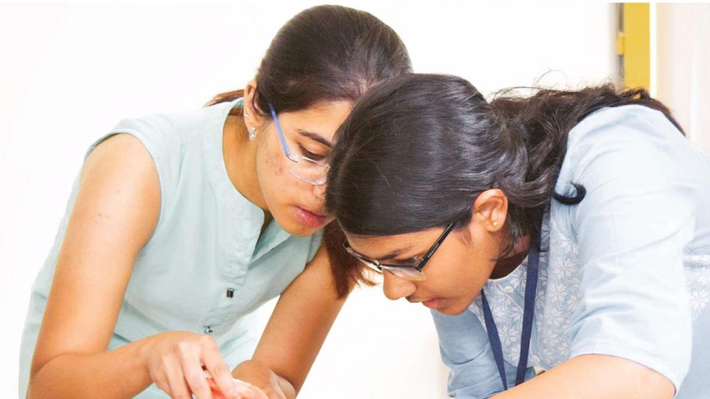
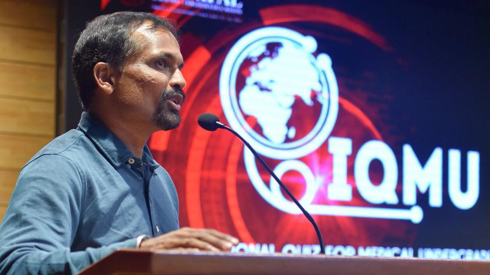

Aditi
BGS Medical College
" Walking down memory lane, IQMU 2019 was an amazing
experience. We came to know
about the
quiz via social media and were captivated by the different rounds and workshops part of the
quiz.
Round 2 and Wild card Round 1 - Enigma conducted by Cutting Edge (Surgical Skills Club) were two
events which stood out for us. We thoroughly enjoyed the Murder Mystery Dinner held by the
Justitia
(Forensic Medicine Club) as well as the Emergency Medicine workshop by Tempus Pretioso, a
hands-on learning experience.
Overall, the experience was enthralling and we took back with us some wonderful memories and
learnt important practical techniques.
It was truly a pleasure to be a participant of the 2019 edition of this esteemed quiz. Wishing
you all
the very best for the next edition of IQMU. "

Anjali
BGS Medical College
" Quizzing has always been exhilarating! Hearing
about IQMU at KMC Manipal was
nothing less.
The choice of rounds and workshops attracted us to this event. It was an amazing experience
quizzing
at KMC, the amount of exposure, the organisation, and the creativity of rounds were truly
appreciable.
The Emergency Medicine Workshop and Wild card Round 1 were the highlights of the event. The
overall hospitality and environment were very good. I would like to thank the whole team of IQMU
for providing such a platform for showcasing and assessing our knowledge and a chance to enhance
practical skills. "

Dr Vinod Nayak
Faculty Advisor, IQMU
" My association with TEAM IQMU has been ever so
satisfying. The efforts put in
by the organising team over the years are commendable. Participating teams have increased in
number in the past 3 years. With teams coming in from China and Mexico in the last few
years, we look forward to having more international participants in the city in the coming
editions of the quiz. The quiz entitles the participants to use their knowledge of medicine and
integrate it with life skills to perform the best of their abilities as undergraduates. IQMU’s
association with GEMx has been phenomenal. With more sponsors coming in, the support
shown to medical quizzing has become stronger. IQMU is surely a calendar event to be
marked in a medical student’s journey. I wish all the very best to the incoming participants
and the organising team for the upcoming edition. IQMU 2020 it is! "